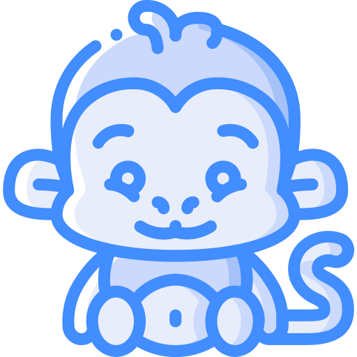
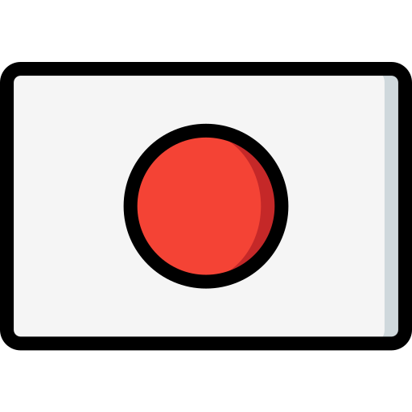

About

The Reason For This Site
Japan, Japanese culture, and the language have become a really big part of my life. In wanting to learn the language, I came across WaniKani and it has become pivotal in my studies. I wanted to create apps that can accentuate what WaniKani offers in order to assist with my learning and also offer something to the community that they can use and hopefully find helpful as well.
The Name
I tried to come up with a clever "two animal mash up" like WaniKani and KameSame, but was having a hard time finding two animal names that rhymed in Japanese. I like monkeys so was trying to find something that rhymed with "saru" and couldn't, so I then thought maybe "saru saru"? But, then that's not a mashup, and I didn't know how I'd represent them as a character (a two headed monkey seemed a bit creepy). I then started looking for maybe colors that rhymed with "saru", and saw blue... but "aoi saru" didn't work either, so I just went with "Blue Monkey" and there you have it.